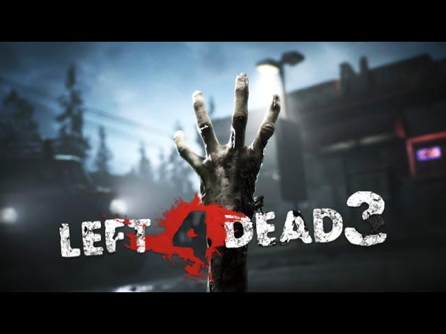
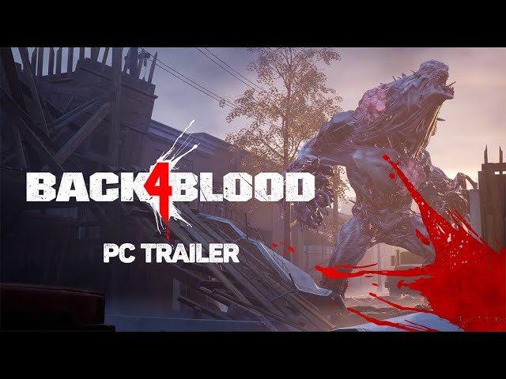
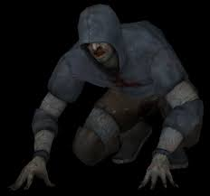
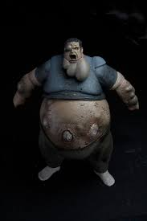
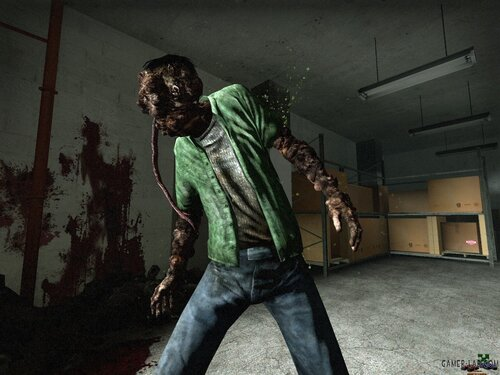
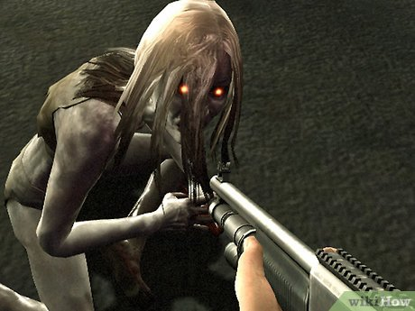
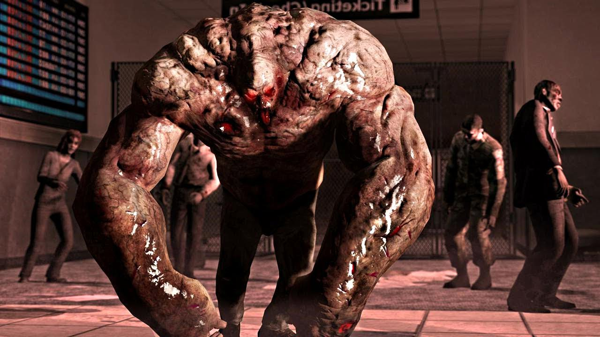

Suposto vazamento do left 4 dead 3 intriga os fãs da franquia
Back 4 blood, jogo inspirado em left 4 dead bate recorde de jogadores
Left 4 Dead quase não foi um jogo sobre zumbis
Zumbis Especiais
Hunter
O hunter é um zumbi especial muito perigoso e agil, ele pula em cima dos jogadores enquanto utiliza suas garras para causar dano. Quando pêgo por um hunter, só é possível se safar com a ajuda de um colega de equipe.
Boomer
Boomer é o nome utilizado para se referir ao zumbi que explode nos jogadores, liberando uma substância que atrai hordas gigantescas de zumbis comuns. Pode causar estrago no time se for atingido de perto.
Smoker
É chamado assim pela fumaça que exala, o smoker possui uma língua enorme que é capaz de estrangular os sobreviventes. Assim como o hunter, só é possível se safar dele com a ajuda de outro sobrevivente.
Witch
Sem dúvidas, a mais assustadora do jogo, seu choro amentrontador assusta até mesmo jogadores mais experientes. A witch só irá atacar o jogador quando se sentir ameaçada. Diferente dos demais, ela é a única zumbi no jogo que derruba os sobreviventes com um só golpe.
Tank
Considerados por muitos como um "boss", o tank é o zumbi mais resistente do jogo, podendo receber diversos ataques e continuar de pé, sendo forte o suficiente para arremessar pedregulhos, carros ou até mesmo jogadores.
esse site é baseado no jogo de terror Left 4 Dead da empresa Valve. Jogue com seus amigos, crie estratégias para derrotar os zumbis especiais, e fique por dentro das atualizações.